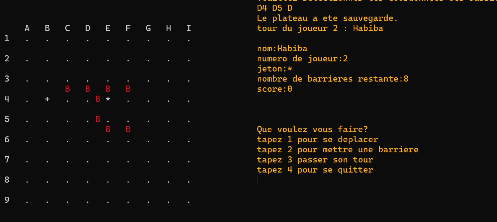

← Retour à l'accueil
Quoridor – Jeu de stratégie en C
ECE – 1A cycle ingénieur · Projet C

Objectif du projet
Implémenter en langage C le jeu de société Quoridor, un jeu de stratégie
pour 2 ou 4 joueurs se déroulant sur un plateau de 9 × 9 cases. Chaque joueur
doit atteindre le bord opposé du plateau en déplaçant son pion, tout en posant des
barrières pour ralentir ses adversaires sans les bloquer totalement.
Contexte
Projet de groupe réalisé en 1ère année de cycle ingénieur.
L’objectif était de concevoir un jeu complet en mode console :
gestion du plateau, tours de jeu, sauvegarde de partie, système de scores et
interface utilisateur textuelle.
Règles & mécaniques de jeu
- Plateau représenté par une grille 9 × 9 où les pions se déplacent orthogonalement.
- À chaque tour, un joueur peut soit déplacer son pion, soit poser une barrière.
- Les barrières bloquent temporairement certains chemins, mais ne doivent jamais
couper définitivement l’accès à la ligne d’arrivée d’un joueur.
- Le premier joueur à atteindre le bord opposé de départ gagne la partie.
Structures de données & architecture
Plateau & barrières
- Tableau 2D pour représenter la grille 9 × 9 et les cases occupées.
- Mise à jour des cases lors des déplacements et des placements de barrières.
- Vérifications pour garantir qu’une barrière ne bloque pas totalement un joueur.
Joueurs & état de partie
- Structures pour stocker nom, numéro de joueur, position (x, y) et barrières restantes.
- Variables globales et locales pour gérer le tour courant, le plateau, les déplacements.
- Gestion de l’ordre de jeu et de la condition de victoire.
Fonctionnalités principales
- Plateau Génération et initialisation d’une grille 9 × 9.
- Déplacements Gestion des déplacements de pions avec
vérification des limites et des barrières (haut, bas, gauche, droite).
- Barrières Placement de barrières avec validation de la position
et contrôle du nombre de barrières disponibles par joueur.
- Tours de jeu Boucle principale qui alterne les joueurs,
propose les actions (déplacer, poser barrière, passer, quitter) et met à jour l’état du jeu.
- Victoire Détection automatique du joueur qui atteint le bord opposé.
- Menu Écran principal : nouvelle partie, reprendre partie,
afficher l’aide, afficher les scores, quitter.
- Sauvegarde Sauvegarde et reprise de partie via fichiers texte.
- Scores Enregistrement et affichage des scores dans un fichier dédié.
Exigences techniques notables
- Interface en mode console avec menus textuels et saisies via
scanf.
- Validation systématique des entrées utilisateur (coordonnées, choix de menu, directions).
- Modularité du code : séparation en fonctions pour le plateau, les joueurs,
la logique de partie et l’affichage. :contentReference[oaicite:3]{index=3}
- Gestion de fichiers (sauvegarde d’état, reprise de partie, stockage des scores).
- Utilisation de logigrammes pour structurer le déplacement, la pose de barrières
et le déroulement global de la partie (diagrammes pages 10–12 du rapport).
Résultats
Le jeu se lance en console avec un menu ASCII stylisé, offrant toutes
les options principales (nouvelle partie, reprise, aide, scores). Le plateau et les barrières
sont affichés sous forme de grille textuelle (lignes/colonnes étiquetées), et les scores sont
présentés avec un titre « SCORE » en art ASCII.
Bilan et pistes d’amélioration
| Aspect |
Résultat |
Pistes d’amélioration |
| Plateau & initialisation |
Fonctionnel, structures de données bien gérées. |
Améliorer l’esthétique de l’affichage. |
| Placement des barrières |
Fonctionnel avec logique de validation. |
Renforcer le contrôle de toutes les règles de placement. |
| Déplacement des joueurs |
Gestion correcte des coordonnées et collisions. |
Traiter certains cas limites (bords, multiples obstacles). |
| Menu & affichage |
Menus interactifs et infos joueurs affichées. |
Uniformiser encore plus la mise en page texte. |
| Sauvegarde / reprise & scores |
Fichiers fonctionnels pour l’état de partie et les scores. |
Mieux gérer les fichiers inexistants/corrompus et le format des scores. |
Compétences développées
- Programmation en C structurée et modulaire.
- Modélisation de jeu de plateau : grille, joueurs, barrières, règles.
- Gestion de fichiers pour la persistance des données.
- Conception d’algorithmes de déplacement et validation de coups.
- Travail en équipe avec répartition des tâches et commits GitHub.
C
Jeu de stratégie
Quoridor
Structures de données
Algorithmes
Fichiers & sauvegarde
Projet de groupe